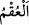

yeryüzüne indiğinde evlenecek ve kız evlâdları olacaktır. Yahya (a.s.) evlenmiştir.
Ancak eşine hiç yaklaşmamıştır. Böyle davranmak onun şerîatında azîmet olduğu için
zifâf olmamıştır. Bazıları da evlenip eşleriyle beraber oldukları halde evladları
olmamıştır.
“__WORD__/ukm” kelimesinin aslı iz kabul etmeyen kuruluktur. Kadınlardan “akîm” olanlar
erkeğin suyunu kabul etmeyenlerdir. Kamus’ta “ukm” kelimesiyle ilgili olarak “kadının
rahminde döllenmeye engel olan bir hastalıktır” denmiştir. Kısır adam, çocuğu olmayan
kimsedir. Kısırlık, kadın için olduğu gibi erkek için de olabilir. Erkeğin suyunda bir
takım özür ve hastalıklar sebebiyle döllenip aşılanmaya mâni bir durum olabilir.
“O herşeyi bilendir, herşeye gücü yetendir.” Allah Teâlâ olmuş ve olacak her şeyi
çok iyi bilir. Kudret dâhilinde olan her şeye gücü yeter. Yapılmasında da hikmet ve
maslahat olan her şeyi yapar.
Kâşifî şöyle demiştir: Verdiği her şeyi bilen, meydana getirdiği her şeye gücü
yetendir. O’nun ilmi cehâletten mukaddes ve müberrâdır. Onun kudreti âcizlikten
münezzeh ve muarrâdır. Onun ilmi cehâlet şâibesinden beri, kudretiyse eksiklik ve kusur
kirliliğinden uzaktır.
Şu husus iyice anlaşıldı ki; insanın evlâdı ya olur ya da olmaz. Olursa ya sadece erkek
yahut sadece kız yahut hem erkek hem kız olur. Âyette bütün bu kısımlar tam olarak
verilmiştir. Kasdedilen mânâ şudur: Muhakkak ki Allah Teâlâ çocuk sahibi olmaları
bakımından kulların durumlarını bu yöndeki irâdesi gereğince değişik değişik yapmıştır.
Bazı kullarına bunlardan erkek yahut kız tek bir sınıf hibe eder. Bazı kullarına hem erkek
hem kız olarak her iki sınıftan da hibe eder. Diğer bazı kullarını da kısır yapar, onlara
evlâd vermez. Sonuçta erkek olsun kız olsun, evlâdlar Allah’ın, kullarına hibe ve
lutuflarıdır. Dolayısıyla evladı olduğu müjdesini alan kişinin buna sevinmesi, bunu
Allah’ın bir nimet ve lutfu olarak görmesi sünnettir. Hadis-i şerifte “evlâd kokusu
cennet kokusudur”[135] buyrulmuştur. Bir başka hadis-i şerifte Peygamberimiz (s.a.)
şöyle buyurmaktadır: “Evlâd dünyada nûr, âhirette sürûr, sevinç ve mutluluktur.” Yine
haberde şöyle gelmiştir: “Çocuk doğuran siyah bir kadın, güzel fakat kısır bir kadından
daha hayırlıdır.”[136] Çünkü neslin devamı ancak çocuk doğuran kadınlar sayesinde
mümkün olur.
Kadının doğurgan oluşu, sağlık ve gençliğinden bilinir. Kişi, nikâhı altında bulunup
çocuk doğuran bir kadın hakkında, doğurduğu çocuğu kasdedip “bu benden değildir”
diyerek böyle yanlış bir tutum içine girmemelidir. Zîrâ Yüce Allah, böyle karaktersiz
birini kıyâmet günü rezil ve rüsvây edecek; ona gökteki yıldızlar, yeryüzündeki kum
taneleri ve ağaçların yaprakları kadar günah yazacaktır.
Âyete şöyle bir mânâ verildiği de söylenmiştir: Allah dilediğine kız evladları yani
dünyayı, dilediğine erkek evlâdlar yani âhireti yahut hem erkek hem kız evlâdları yani
hem dünyayı hem de âhireti verir. Dilediğini de kısır yapar yani ona ne dünyayı ne de
âhireti verir. Keşfü’l-esrâr’da böyledir. Bu açıklamada dünyanın dişiliğine, âhiretin